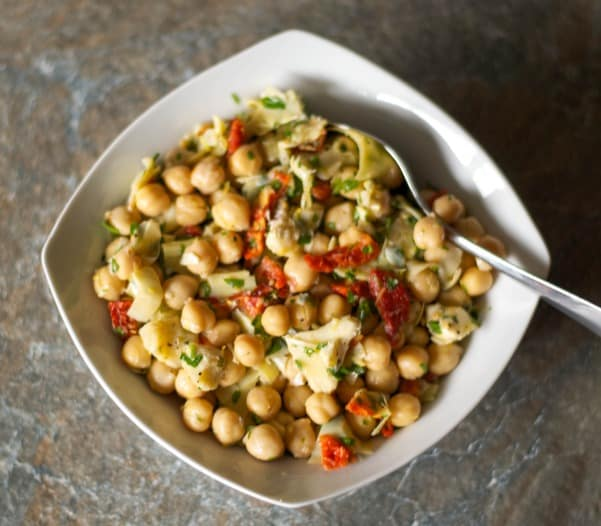

Chickpea Salad

Description
Chick pea salad with marinated artichokes and sun dried tomatoes in a
vinaigrette made with fresh lemon juice and extra virgin olive oil.
Ingredients
- 1- (15-ounce) can chick peas , rinsed
- 1/4 cup chopped marinated artichokes
- 1/4 cup chopped sun dried tomatoes
- 2 tablespoons chopped fresh parsley
- 1 tablespoon extra virgin olive oil
- 1 lemon , zest and juice
- 1/4 teaspoon kosher salt
- 1/8 teaspoon black pepper
Steps
- Mix all ingredients together in a bowl and refrigerate until ready to serve.
Go Home